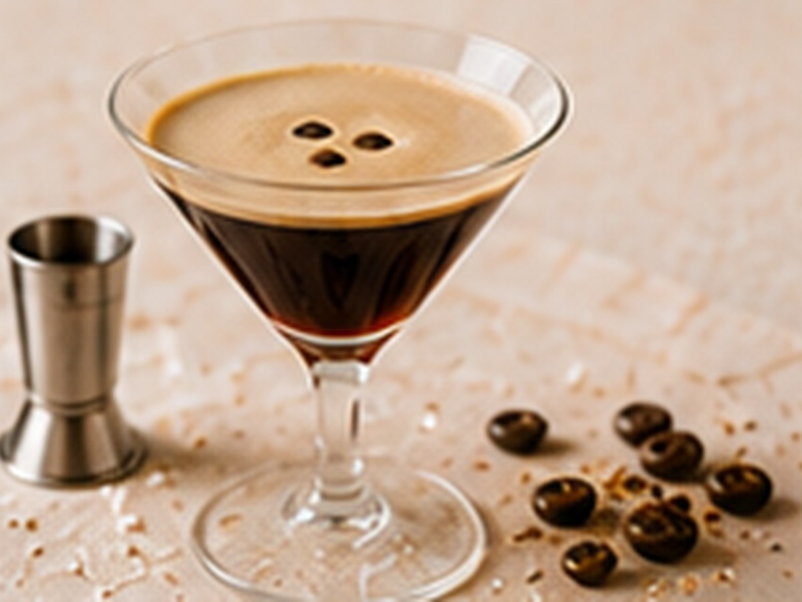

✨ KI-generiertes Bild Kaffee-CocktailsKaffee-Cocktails
Espresso Martini
🥃 Enthält Alkohol – nur für ErwachseneDer Klassiker unter den Kaffee-Cocktails.
⏱5 Min.
📶Mittel
☕1 Portion
🫘Zutaten
- Espresso, kalt1 Shot
- Wodka4 cl
- Kaffeelikör2 cl
- Zuckersirup1 cl
📋Zubereitung
- 1Espresso frisch zubereiten und abkühlen lassen.
- 2Alle Zutaten mit viel Eis im Shaker kräftig schütteln.
- 3In ein gekühltes Glas ohne Eis abseihen.
💡
Kaffee für dieses Rezept entdeckenLeNoKo Shop
→
Kaffee-Tipp
unseren Linzer Espresso liefert die kräftige Crema, die diesem Cocktail seinen Schaum gibt.